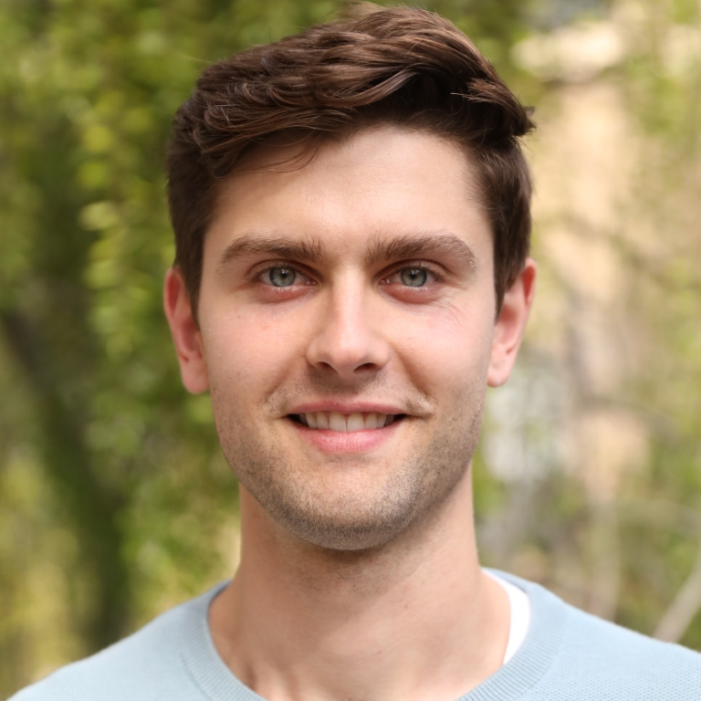

I'm a PhD student at Stanford University and a member of the Stanford Intelligent Systems Laboratory (SISL). My current research focuses on sampling and estimation for safety validation of autonomous systems in safety-critical applications, such as self-driving cars and autonomous aircraft. I build upon methods from Bayesian inference and generative modeling to evaluate the safety of complex, high-dimensional autonomous systems..
At Stanford I am advised by Mykel Kochenderfer, and am also a member of the Stanford Center for AI Safety. During my PhD, I have had the opportunity to work with sponsors such as Ford, Motional, NASA JPL, and Nissan. Prior to my PhD at Stanford I earned by Bachelor's degree from Georgia Tech, where I worked on attitude determination and control for small satellites.
Publications
Failure Probability Estimation for Black-Box Autonomous Systems using State-Dependent Importance Sampling Proposals

Harrison Delecki, Sydney M. Katz, and Mykel J. Kochenderfer
International Conference on Control, Decision and Information Technologies (CoDIT) 2025
Diffusion-Based Failure Sampling for Cyber-Physical Systems
Harrison Delecki, Marc R. Schlichting, Mansur Arief, Anthony Corso, Marcell Vazquez-Chanlatte, and Mykel J. Kochenderfer
International Conference on Engineering Reliable Autonomous Systems (ERAS) 2025
Entropy-regularized Point-based Value Iteration
Harrison Delecki, Marcell Vazquez-Chanlatte, Esen Yel, Kyle Wray, Tomer Arnon, Stefan Witwicki, and Mykel J. Kochenderfer
UInternational Conference on Control, Decision and Information Technologies (CoDIT) 2025
Deep Normalizing Flows for State Estimation
Harrison Delecki, Liam A. Kruse, Marc R. Schlichting, and Mykel J. Kochenderfer
International Conference on Information Fusion 2023
Model-based Validation as Probabilistic Inference
Harrison Delecki, Anthony Corso, and Mykel J. Kochenderfer
Learning for Dynamics and Control Conference 2023, Oral
How Do We Fail? Stress Testing Perception in Autonomous Vehicles
Harrison Delecki, Masha Itkina, Bernard Lange, Ransalu Senanayake, and Mykel J. Kochenderfer
International Conference on Intelligent Robots and Systems 2022